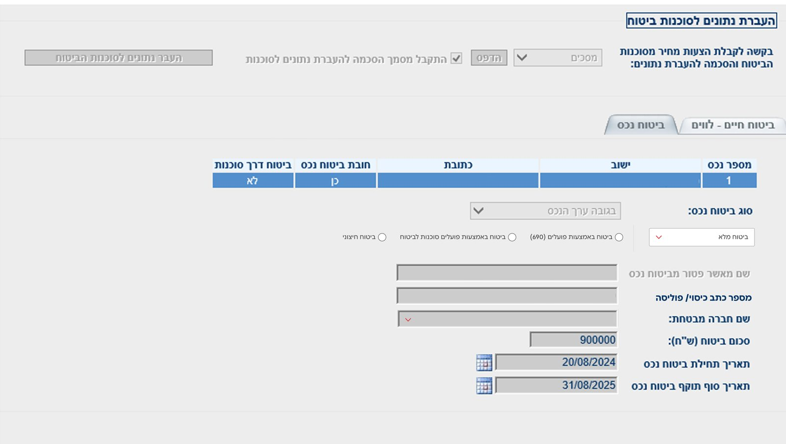
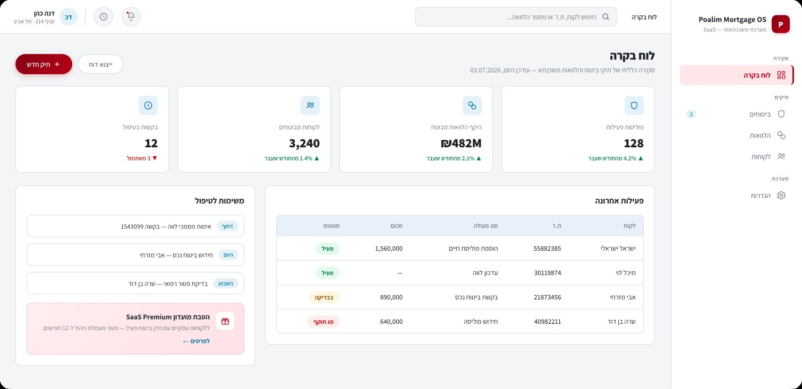
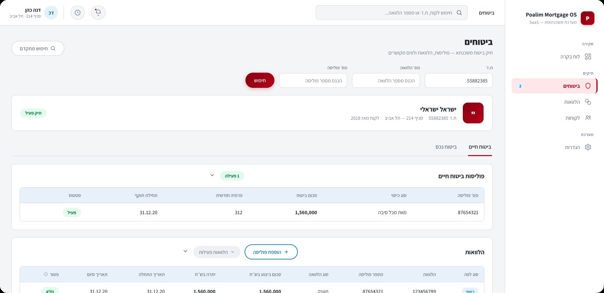
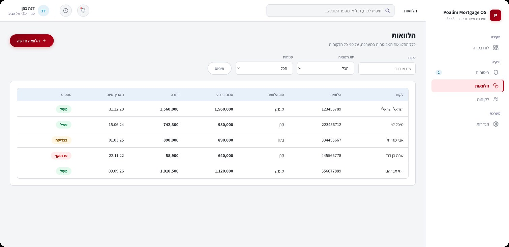

Year
2025
Role
Product Design Manager
Duration
12 months
Scope
User Research, UX, UI, Microcopy, Usability Testing, Design System
Redesigned Bank Hapoalim's internal mortgages dashboard: dense, unprioritized tables that forced bankers to jump between screens became a guided, hierarchy-first workspace built around what bankers and clients actually need.
regular
users
Bankers who rely on the dashboard daily.
call handling
time
Average drop in call handling time per case.
The internal banking dashboard bankers used every day spoke a different language than the clients they served. Dense, unprioritized tables and fragmented views meant no clear starting point, just a wall of data bankers had to manually cross-reference across screens, one login session at a time.
Bankers and clients spoke different financial languages, causing high friction, manual errors, and prolonged session times.
Dense, unprioritized tabular data and fragmented views forced bankers to jump between screens to find critical metadata.
No clear information hierarchy or intuitive navigation, driving high drop-offs and limiting the bank's ability to scale service quality.

beforeThe fix wasn't more data, it was the right data in the right order. The dashboard was rebuilt around what a banker actually needs to know first, with everything else structured and available, not competing for attention.
Redesigned the dense tabular interface into an intuitive, guided dashboard prioritizing essential parameters for bankers and clients alike.
Clear visual nesting and structured modules centralize critical indicators, cutting the need to toggle between fragmented screens.
Refined through continuous feedback loops, balancing complex banking logic and regulation with clean, high-performance UI.



150+ bankers rely on the redesigned dashboard as their daily workspace, not a tool they open occasionally.
Average call-center calls dropped by 8 minutes. Bankers report the shorter calls led to a better connection with customers and fewer points of friction.
Average call handling time after the redesign.
Not every change happens in one leap: to bring veteran employees along, we shipped a softer in-between version first, then moved to the final design.